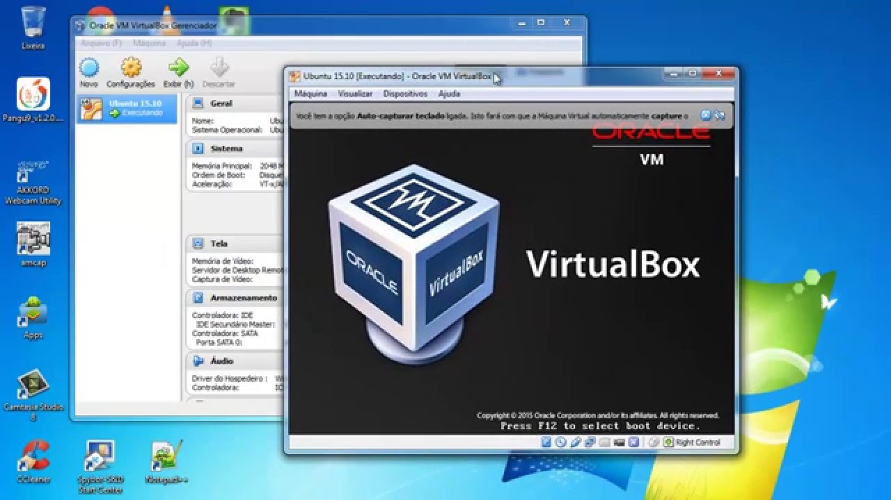

Máquinas Virtuais
Máquinas virtuais permitem executar múltiplos sistemas operacionais em um único hardware, otimizando recursos e facilitando a gestão de ambientes de teste e produção.
Máquinas virtuais permitem executar múltiplos sistemas operacionais em um único hardware, otimizando recursos e facilitando a gestão de ambientes de teste e produção.
Redes virtuais criam ambientes isolados dentro de uma infraestrutura de rede, permitindo maior segurança e flexibilidade na comunicação entre máquinas virtuais.
Servidores de aplicativo são responsáveis por executar aplicações e processar lógica de negócios, servindo como intermediários entre clientes e servidores de banco de dados.

Bancos de dados armazenam, gerenciam e recuperam dados de forma eficiente, permitindo que aplicações acessem informações de maneira organizada e segura.
A KAIZEN é uma empresa de tecnologia contratada pelo Atacadão Cotia para criar o monitoramento de servidor, câmeras, computadores, softwares e aplicações.